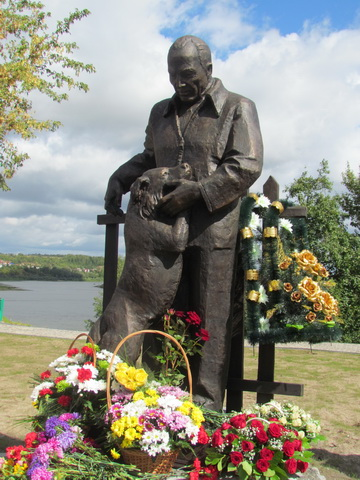
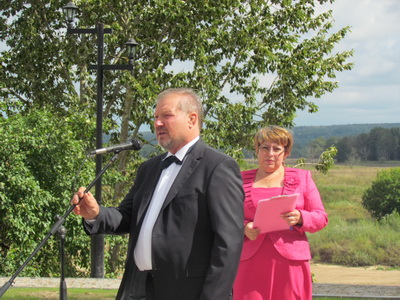
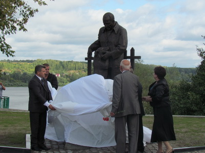
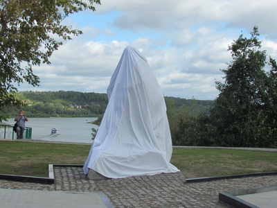
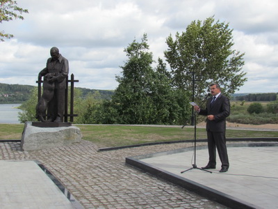
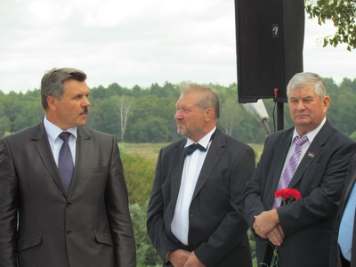
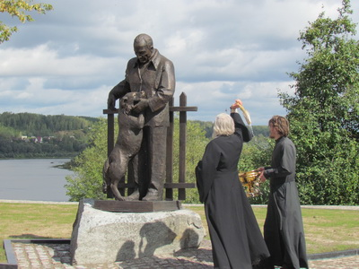

Архив новостей
Открытие памятника К.Г. Паустовскому
24 августа 2012 года, в день основания Тарусского района, в городе Тарусе прошло торжественное открытие памятника писателю, Почётному гражданину города Константину Георгиевичу Паустовскому. Автор и исполнитель проекта – скульптор, действительный член Академии архитектурного наследия, профессор, доктор философии Вадим Михайлович Церковников.
Открытие памятника в Тарусе стало значимым событием, памятник был открыт при большом стечении народа. Присутствовали здесь и тарусяне, и множество гостей нашего города. В этом году исполняется 120 лет со дня рождения К.Г. Паустовского. Он был не только великим писателем XX столетия, но и настоящим гражданином Тарусы, который сделал очень много для развития города и района.
Вместе с В.М. Церковниковым памятник открывали Министр культуры Калужской области А.И. Типаков, заместитель Председателя Законодательного собрания Калужской области Г.М. Донченкова, глава администрации Тарусского района Е.М.Мальцев. Упало белое покрывало, которое скрывало памятник от взоров людей, и все увидели Константина Георгиевича таким, каким его помнят старожилы города, добрым человеком с проницательным взглядом, рядом с ним его любимая собака.
После этого торжественного момента было много поздравлений тарусянам от гостей праздника и награждение участников проекта почетными грамотами и Благодарственными письмами Главы администрации МР «Тарусский район» Е.М. Мальцева за большой вклад в сооружение памятника.
Почетной грамотой администрации МР «Тарусский район» были награждены:
- Церковников Вадим Михайлович, руководитель авторского коллектива;
- Ржевский Валерий Николаевич член авторского коллектива, архитектор, автор проекта;
- ЗАО «ИНТЕКО»;
- ООО «Производственно-творческие мастерские «БИОР»;
- ЗАО «Московский камне-обрабатывающий комбинат»;
- Благотворительный Фонд «Православная художественная галерея Храма Всех Святых», за оказание благотворительной помощи в сооружении памятника русскому писателю К.Г.Паустовскому;
- ООО «ЭКС – МОНУМЕНТ»;
- ЗАО «АРТ-АТП»;
Благодарственным письмом администрации МР «Тарусский район» награждены:
- Президент ЗАО «ИНТЕКО» Солощанский Олег Моисеевич;
- Генеральный директор ООО «Производственно-творческие мастерские «БИОР» Карпенко Артем Михайлович;
- Генеральный директор Благотворительного Фонда «Православная художественная галерея» «Храма Всех Святых» Церковникова Маргарита Георгиевна;
- Генеральный директор ООО «ЛИТ-АРТ» Устенко Александр Александрович;
- Заместитель генерального директора ДСК-7 Фалкин Борис Феликсович;
- Генеральный директор ЗАО «ПАТРИОТ» ИНЖИНИРИНГ» Шмелев Станислав Евгеньевич;
- Директор ООО «ПТМ БИОР» Попков Владимир Анатольевич;
- Производитель работ ООО «ПТМ «БИОР» Касимов Карим Курбанханович;
- Глава администрации городского поселения «Город Таруса» Дёмкин Авиль Тимофеевич;
- Заместитель главы администрации муниципального района «Тарусский район» «Добычин Сергей Викторович;
- Начальник отдела ведения кадастра землеустроительной и градостроительной документации администрации муниципального района «Тарусский район» Маркин Николай Петрович;
- Антонова Людмила Анатольевна, жительница города Тарусы;
- Председатель Тарусского РАЙПО Попов Гектор Анастасович;
- Федюк Юрий Станиславович;
- Старший государственный инспектор ГИМС МЧС России по Калужской области Калмыков Алексей Сергеевич;
- Геодезист ООО «Архитектурно-проектного бюро» Пащенко Галина Николаевна;
- Порошин Владимир Анатольевич.
По окончании праздника тарусяне и гости города возложили цветы к памятнику своему знаменитому земляку.
     